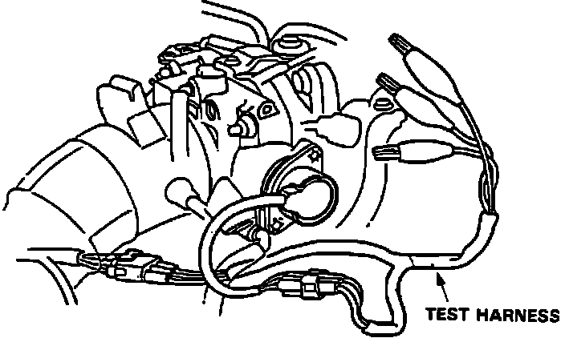
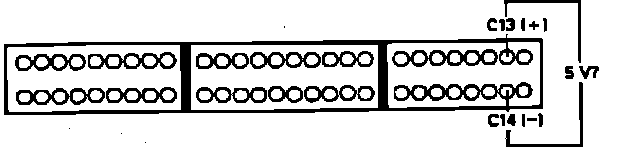
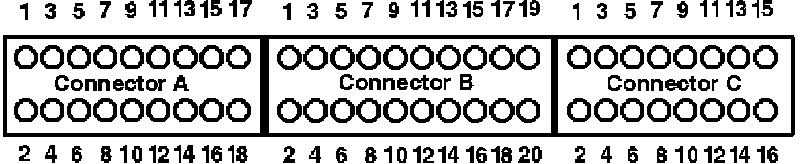

DTC 7
Code 7 indicates a malfunction in the throttle angle sensor or sensor circuit.NOTE: This test requires the use of Acura sensor test harness part no. 07GMJ-ML80100 or equivalent. Wire colors referenced in testing procedures refer to test harness coloring and not the actual harness wire color.
1. Remove Alternator Sense fuse in underhood relay box for 10 seconds to reset ECU.
2. Start engine and observe diagnostic LED.
Flashes code 7, proceed to step 4.
Does not flash, proceed to next step.
3. Malfunction is intermittent. Check connections between ECU and throttle angle sensor. End of test.
4. Turn ignition off.
Throttle Angle Sensor Diagnosis:

5. Connect sensor test harness between throttle angle sensor and harness connector.
6. Turn ignition on and check voltage between RED and GRN test harness terminals.
Approx. 5 volts, proceed to step 13.
Not approx. 5 volts, proceed to next step.
7. Measure voltage between RED terminal and ground.
Approx. 5 volts, proceed to next step.
Not approx. 5 volts, proceed to step 9.
8. Repair open in GRN/WHT wire between throttle angle sensor and ECU terminal C14. End of test.
9. Turn ignition off.
10. Install test harness between ECU and harness connector. If test harness is not available, carefully backprobe wires at ECU connector.
Throttle Angle Sensor Code 7 Diagnosis:

11. Turn ignition on.
12. Check for voltage between ECU terminals C13 and C14.
Approx. 5 volts, proceed to next step.
Not approx. 5 volts, replace electronic control unit. End of test.
13. Measure voltage between GRN and WHT wires with throttle full open.
Approx. 4 volts, proceed to step 15.
Not approx. 4 volts, proceed to next step.
14. Check for short in RED/YEL wire between ECU terminal C7 and throttle angle sensor. If wire checks OK, replace throttle angle sensor. End of test.
15. Turn ignition off.
16. Install test harness between ECU and harness connector. If test harness is not available, carefully backprobe wires at ECU connector.
17. Turn ignition on.
Electronic Control Unit Pin And Connector Identification:

18. Check voltage between ECU terminals C7 and C14.
Approx. 4 volts, replace electronic control unit. End of test.
Not approx. 4 volts, proceed to next step.
19. Repair open RED/YEL wire between ECU terminal C7 and throttle angle sensor.